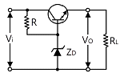
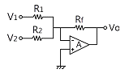
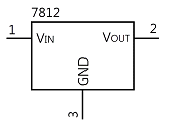
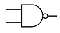
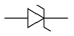
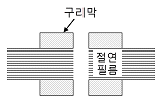

전자캐드기능사 (2016-04-02 기출문제)
1과목: 전기전자공학(대략구분)
1. 집적회로(Integrated Circuit)의 장점이 아닌 것은?
- 신뢰성이 높다.
- 대량 생산할 수 있다.
- 회로를 초소형으로 할 수 있다.
- 주로 고주파 대전력용으로 사용된다.
(정답률: 81%)

2. 3단자 레귤레이터 정전압 회로의 특징이 아닌 것은?
- 발진 방지용 커패시터가 필요하다.
- 소비 전류가 적은 전원 회로에 시용한다.
- 많은 전력이 필요한 경우에는 적합하지 않다.
- 전력소모가 적어 방열대책이 필요 없는 장점이 있다.
(정답률: 73%)
3. 다음 정전압 안정화 회로에서 제너다이오드 ZD의 역할은? (단, 입력전압은 출력전압보다 높다.)

- 정류작용
- 기준전압 유지 작용
- 제어작용
- 검파작용
(정답률: 64%)
4. 연산증폭기의 연산의 정확도를 높이기 위 해 요구되는 사항이 아닌 것은?
- 좋은 차단 특성을 가져야 한다.
- 큰 증폭도와 좋은 안정도를 필요로 한다.
- 많은 양의 부궤환을 안정하게 걸 수 있어야 한다.
- 높은 주파수의 발진출력을 지속적으로 내야 한다.
(정답률: 62%)
5. 전자기파에 대한 설명 중 틀린 것은?
- 전자기파는 수중의 표면에서 일어나 는 현상을 관찰하는 데 이용된다.
- 전자기파란 주기적으로 세기가 변화 하는 전자기장이 공간으로 전파해 나가는 것을 말한다.
- 전자기파는 우주공간에서 전파의 전달이 불가능하다.
- 전자기파는 매질이 없어도 진행할 수 있다.
(정답률: 77%)
6. 단급 푸시풀 증폭기에 대한 설명으로 옳은 것은?
- 효율이 낮은 대신 왜곡이 거의 없다.
- 무선 통신에서 고주파인 반송파 전력 증폭회로에 사용된다.
- A급 전력증폭회로에 비해 전력효율이 좋다.
- 교차 일그러짐 현상이 없다.
(정답률: 63%)
7. LC 발진기에서 일어나기 쉬운 이상 현상이 아닌 것은?
- 기생 진동(Parasitic Oscillator)
- 자왜(磁番) 현상
- 블로킹 (Blocking) 현상
- 인입 현상(Pull-in Phenomenon)
(정답률: 73%)
8. 다음 중 광전변환소자가 아닌 것은?
- 포토 트랜지스터
- 태양전지
- 홀 발전기
- CCD(Charge Coupled Device) 센서
(정답률: 64%)
9. 적분기 회로를 구성하기 위한 회로는?
- 저역통과 RC회로
- 고역통과 RC회로
- 대역통과 RC회로
- 대역소거 RC회로
(정답률: 69%)
10. 정격전압에서 100[W]의 전력을 소비하는 전열기에 정격전압의 60[%] 전압을 가할 때의 소비전력은 몇 [W]인가?
- 36
- 40
- 50
- 60
(정답률: 58%)
11. 다음과 같은 회로의 명칭은?

- 미분회로
- 적분회로
- 가산기형 D/A 변환회로
- 부호 변환회로
(정답률: 68%)
12. 실제적인 R-L-C 병렬공진회로에서 R이 2[Ω], L은 400[μH], C는 250[pF] 일 경우에 공진 주파수는 약 몇 [kHz]인가?
- 200
- 300
- 450
- 500
(정답률: 48%)
13. 단상 전파정류기의 DC 출력전압은 단상 반파정류기 DC 출력전압의 몇 배인가?
- 2
- 3
- 4
- 5
(정답률: 68%)
14. 커패시터 중에서 고주파회로와 바이패스(Bypass) 용도로 많이 사용되며 비교적 가격이 저렴한 커패시터는?
- 세라믹 커패시터
- 마일러 커패시터
- 탄탈 커패시터
- 전해 커패시터
(정답률: 65%)
15. 다음 중 N형 반도체를 만드는 데 사용되는 불순물의 원소는?
- 인듐(In)
- 비소(As)
- 갈륨(Ga)
- 알루미늄(Al)
(정답률: 78%)
2과목: 전자계산기일반(대략구분)
16. 10진수 0~9를 식별해서 나타내고 기억하는 데에는 몇 비트의 기억 용량이 필요한가?
- 2비트
- 3비트
- 4비트
- 5비트
(정답률: 72%)
17. 컴퓨터의 주기억장치와 주변장치 사이에 서 데이터를 주고받을 때, 둘 사이의 전송 속도 차이를 해결하기 위해 전송할 정보를 임시로 저장하는 고속 기억장치는?
- Address
- Buffer
- Channel
- Register
(정답률: 66%)
18. 데이터베이스를 사용할 때, 데이터베이스에 접근할 수 있는 하부 언어로 구조적 질의어라고도 하는 언어는?
- 포트란(FORTRAN)
- C
- 자바(Java)
- SQL
(정답률: 61%)
19. 레지스터와 유사하게 동작하는 임시저장 장소로써 다음 실행할 명령어의 주소를 기억하는 기능을 하는 것은?
- 레지스터
- 프로그램 카운터
- 기억장치
- 플립플롭
(정답률: 63%)
20. (1011010)2를 8진수와 16진수로 변환하면?
- (132)8, (5A)16
- (132)8. (5B)16
- (131)8, (5A)16
- (131)8, (50)16
(정답률: 69%)
21. 2진수 10101 에 대한 2의 보수는?
- 11001
- 01010
- 01011
- 11000
(정답률: 76%)
22. 마이크로프로세서에서 가산기를 주축으로 구성된 장치는?
- 제어장치
- 입출력장치
- 산술논리 연산장치
- 레지스터
(정답률: 77%)
23. 다음 중 제어장치의 역할이 아닌 것은?
- 명령을 해독한다.
- 두 수의 크기를 비교한다.
- 입출력을 제어한다.
- 시스템 전체를 감시 제어한다.
(정답률: 74%)
24. 비수치적 연산에서 하나의 레지스터에 기억된 데이터를 다른 레지스터로 옮기는 데 사용되는 연산은?
- OR
- AND
- SHIFT
- MOVE
(정답률: 77%)
25. 순서도(Flowchart)의 특징이 아닌 것은?
- 프로그램 코딩 (Coding) 의 기초 자료 가 된다.
- 프로그램 코딩 전 기초 자료가 된다.
- 오류 수정(Debugging)이 용이하다,
- 사용하는 언어에 따라 기호. 형태도 달라진다.
(정답률: 77%)
26. 주변장치의 입출력방법이 아닌 것은?
- 데이지체인방법
- 트랩방법
- 인터럽트방법
- 풀링방법
(정답률: 55%)
27. CPU와 입출력 사이에 클록신호에 맞추어 송·수신하는 전송제어방식을 무엇이라 하는가?
- 직렬 인터페이스(Serial Interface)
- 병렬 인터페이스(Parallel Interface)
- 동기 인터페이스(Synchronous Inter- face)
- 비동기 인터페이스(Asynchronous Interface)
(정답률: 71%)
28. 입출력장치와 CPU 사이에 존재하는 속도 차를 줄이기 위해 사용하는 것은?
- Bus
- Channel
- Buffer
- Device
(정답률: 56%)
29. 도면 작성 시 기본 단위로 옳은 것은?
- ㎜
- ㎝
- m
- ㎞
(정답률: 84%)
30. 다음 그림의 기호를 가진 부품은?

- 트랜지스터
- 크리스탈
- 레귤레이터
- Buzzer
(정답률: 72%)
3과목: 전자제도(CAD) 이론(대략구분)
31. 다음 논리게이트 기호로 맞는 것은?

- AND Gate
- OR Gate
- NAND Gate
- NOR Gate
(정답률: 82%)
32. 회로의 개방, 단락 등의 오배선을 검사하여 오류를 화면이나 텍스트 파일로 보여 주는 것은?
- Clean Up
- Set
- Quit
- ERC
(정답률: 77%)
33. 다음 심볼이 나타내는 부품은?

- 가변용량 다이오드
- 제너 다이오드
- 발광 다이오드
- 정류 다이오드
(정답률: 82%)
34. 반도체 소자 중 전압의 크기에 따라 저항값이 변하는 성질이 있는 소자는?
- 배리스터
- 서미스터
- 트랜지스터
- 다이오드
(정답률: 57%)
35. 한국산업표준(KS)의 전자제도통칙에 대한 설명으로 틀린 것은?
- 전자기기나 제품의 제도에는 특수한 방법이나 기호 등을 사용한다.
- 기하학적 도법에 기초를 둔 것으로 기 기 구조의 표시방법은 기계제도와 동 일하다.
- 설계된 기기의 모양이나 치수 또는 시 설의 배치회로의 결선 등을 도면으로 정확하게 표시해야 한다.
- 한국산업표준에 규정된 사용방법을 따르며 도면은 임의로 그려도 된다.
(정답률: 72%)
36. 국제표준화기구의 규격기호는?
- ANSI
- KS
- DIN
- ISO
(정답률: 79%)
37. 설계도면에 적용한 축척이 1:5일 때 실제 길이가 1[㎝]인 객체는 도면상에 몇 [㎝]로 표현되는가?
- 0.2
- 1
- 2
- 5
(정답률: 70%)
38. 다음 소자 중 3단자 반도체 소자가 아닌 것은?
- SCR
- Diode
- FET
- UJT
(정답률: 75%)
39. 능동소자에 속하는 것은?
- 저항
- 코일
- 트랜지스터
- 커패시터
(정답률: 72%)
40. 한국산업규격(KS)의 제정 목적으로 틀린 것은?
- 국제경쟁력 강화
- 품질 상
- 생산품의 독점
- 소비자 보호
(정답률: 78%)
41. 회로도 작성 시 선과 선이 전기적으로 접속 되는 지점에 표시하는 것은?
- Bus Entry
- Junction
- No Connect
- Alias
(정답률: 70%)
42. 저항의 컬러코드가 좌측부터 적색-보라색-갈색-금색으로 되어 있다. 저항값은 얼마인가?
- 270[Ω]
- 2.7[KΩ]
- 27.0[Ω]
- 2.71[MΩ]
(정답률: 68%)
43. 포토플로터(Photo Plotter)를 이용하여 직 접 그려낸 아트워크 필름은?
- 마스터 필름
- 디아조 필름
- 폴리에스테르 필름
- 감광 필름
(정답률: 49%)
44. PCB에 2,000[Ω]의 저항을 배치하고 기판의 표면에 그 값을 표시한 것 중 가장 적절한 표시방법은?
- 2,000,000[Ω]
- 2,000[KΩ]
- 2[μΩ]
- 2[KΩ]
(정답률: 82%)
45. 절대좌표 A(10, 10)에서 B(20, -20)로 개체가 이동하였을 때 상대좌표는?
- 10, 20
- 10, -20
- 10, 30
- 10, -30
(정답률: 74%)
46. CAD 프로그램에서 회로도면의 설계 시 정확한 부품의 위치 및 배선결선을 위해 화면상의 점 혹은 선으로 나타낸 가상의 좌표를 나타내는 것은?
- 어노테이트(Annotate)
- 프리퍼런스(Preference)
- 폴리라인(Poly Line)
- 그리드(Grid)
(정답률: 74%)
47. PCB 패턴 설계 시 부품 배치에 관한 설명 중 옳은 것은?
- IC 배열은 가능하다면 'ㄱ' 형태로 배치하는 것이 좋다.
- 다이오드 및 전해 콘덴서 종류는 ＋ 방향에 ■형 LAND를 사용한다.
- 전해 콘덴서와 같은 방향성 부품은 오른쪽 방향이 1번 혹은 ＋ 극성이 되게끔 한다.
- 리드수가 많은 IC 및 커넥터 종류는 가능한 납땜 방향의 수직으로 배열한다.
(정답률: 60%)
48. PCB 기판 제조방법의 하나로 대량생산에 적합하고 정밀도가 높으며 내산성 잉크와 물이 잘 혼합되지 않는 점을 이용하여 아연 판을 부식시켜 배선부분만 잉크를 묻게 하 여 제작하는 방법은?
- 사진 부식법
- 오프셋 인쇄법
- 실크스크린법
- 단층 촬영법
(정답률: 57%)
49. 전기적 접속 부위나 빈번한 착탈로 높은 전기적 특성이 요구되는 부위에 부분적으로 실시하는 도금은?
- 아연
- 은
- 금
- 구리
(정답률: 68%)
50. 형상 모델링 중 데이터 구조가 간단하고 처리속도가 가장 빠른 모델링은?
- 와이어프레임 모델링
- 서피스 모델링
- 솔리드 모델링
- CSG 모델링
(정답률: 57%)
51. 컴퓨터를 이용하여 회로도를 완성한 다음 설계규칙을 검증하는 과정에 관한 설명으로 틀린 것은?
- 설계규칙 및 전기적인 규칙에 맞는지 검증하는 단계이다.
- 오류 난 부분의 에러 표시를 도면상에 서 보여 준다.
- 오류메시지는 레포트로 보여 주지 않는다.
- 전기적인 설계규칙 검중환경은 실계 자가 임의로 선택할 수 있다.
(정답률: 68%)
52. CAD 시스템의 일부분으로 컴퓨터와 출력 장치의 처리속도 차이에 기인하여 데이터 처리의 완충작용을 위해 필요한 장치는?
- 데이터 버퍼
- 직렬포트
- RS-232C
- ROM
(정답률: 59%)
53. CAD 시스템 좌표계에서 이전 최종좌표 (점)에서 거리와 각도를 이용하여 이동된 X, Y축의 좌표값을 찾는 방법은?
- 절대좌표
- 상대좌표
- 극
- 상대극좌표
(정답률: 52%)
54. CAD 시스템에 의한 제품 설계 및 도면 작성의 이점으로 볼 수 없는 것은?
- 도면의 표준화를 통한 품질 향상
- 설계 제약에 따른 도면 수정의 어려움
- 설계 요소의 표준화로 원가 절감
- 수치 계산 결과의 정확성 증가
(정답률: 79%)
55. 세라믹 인쇄회로기판에 대한 설명 중 틀린 것은?
- 가격이 저가이고 치수변화가 많다.
- 고절연성 및 고열전도율을 갖는다.
- 화학적 안정성이 좋다,
- 낮은 유전체 손실을 갖는다,
(정답률: 51%)
56. CAD 시스템의 입력장치가 아닌 것은?
- 디지타이저
- 태블릿
- 플로터
- 마우스
(정답률: 68%)
57. 회로도에 관한 설명으로 가장 옳은 것은?
- 장치를 구성하고 있는 부품을 기호로 표현함으로써, 기술의 보조 및 전달이 쉽도록 한 도면
- 부품의 위치와 형태를 도면화한 것으로 부품의 실제 크기를 고려하여 작성 한 도면
- 장치와 장치 사이의 접속 상태나 기능을 알아보기 쉽게 하기 위해서 기호나 실제의 모양을 배치한 도면
- 신호의 흐름 또는 동작 순서대로 그린 도면
(정답률: 47%)
58. 다음 단면구조의 PCB 명칭으로 옳은 것은?

- 비스루홀 도금 PCB
- 스루홀 도금 PCB
- 플렉시블 PCB
- 다층면 PCB
(정답률: 60%)
59. 배치도를 그릴 때 고려해야 할 사항으로 적합하지 않은 것은?
- 균형 있게 배치하여야 한다.
- 부품 상호 간 신호가 유도되지 않도록 한다.
- IC의 6번 핀 위치를 반드시 표시해야 한다.
- 고압회로는 부품 간격을 충분히 넓혀 방전이 일어나지 않도록 배치한다.
(정답률: 75%)
60. 고주파 부품에 대한 대책으로 틀린 것은?
- 부품을 세워 사용하지 않는다.
- 표면실장형(SMD) 부품을 사용하지 않는다.
- 부품의 리드는 가급적 짧게 하여 안테나 역할을 하지 않도록 한다.
- 고주파 부품은 일반회로 부분과 분리하여 배치한다.
(정답률: 59%)